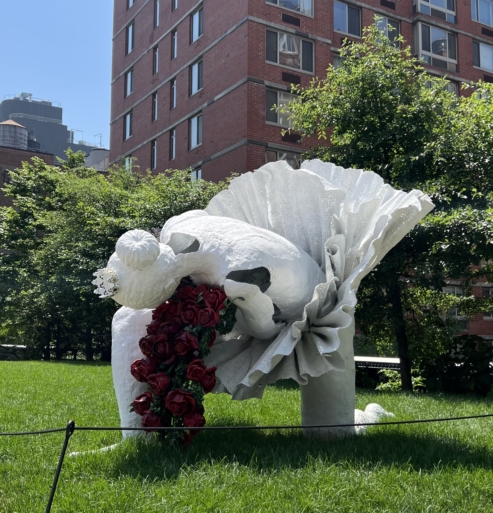

Mis lugares favoritos en el mundo
Nueva York, Estados Unidos
Nueva York me recibió con esa mezcla única entre ruido y libertad. Es una ciudad que vibra todo el tiempo: los autos, las voces, los pasos que se cruzan sin detenerse. Al principio me sentí chiquita, pero enseguida entendí que ahí nadie te mira raro; todos están ocupados siendo ellos mismos. Caminar por sus calles fue como estar adentro de una película donde todo pasa rápido, pero también hay rincones que te invitan a frenar. Un banco en un parque, un edificio lleno de historia, una persona que canta en el subte. Todo tiene vida. Todo inspira.
Uno de los lugares que más me marcó fue el Summit One Vanderbilt: ese momento en el que el reflejo del cielo se mezclaba con mi propio reflejo en los espejos fue casi hipnótico. Ver el Empire State desde otro ángulo, con la ciudad extendiéndose hasta perderse, fue una de esas vistas que te dejan sin palabras. También me encantó perderme por Hudson Yards y descubrir “The Vessel”, una estructura que parece una escultura habitable. Y, como buena amante de los pequeños placeres, los almuerzos improvisados fueron parte del encanto: una ensalada perfecta, un café al paso, una charla espontánea con alguien que me preguntó por mi acento. En Nueva York, cada encuentro es una historia posible. Tip: si podés, caminá sin mapa al menos un día. La ciudad te guía sola.
Nueva York no se recorre, se vive. Es un lugar que te enseña a mirar distinto, a perder el miedo al ritmo y a disfrutar del caos. Cada esquina es una postal, pero también un espejo donde encontrarte. Me fui con la sensación de que, aunque la visite mil veces, siempre voy a descubrir una ciudad nueva. Si te gustó este recorrido, te invito a seguir viajando conmigo por mis otros lugares favoritos del mundo.